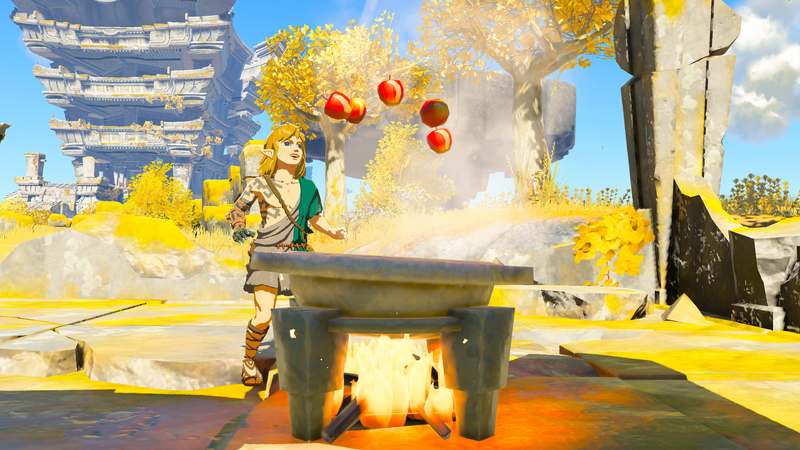
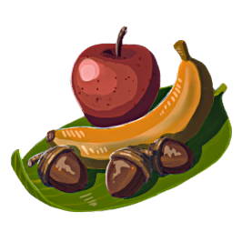
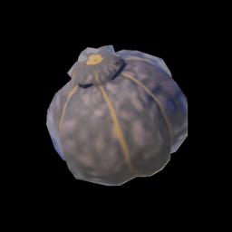
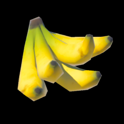
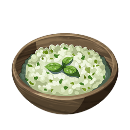
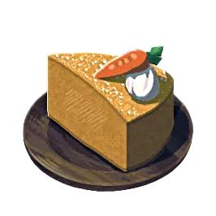
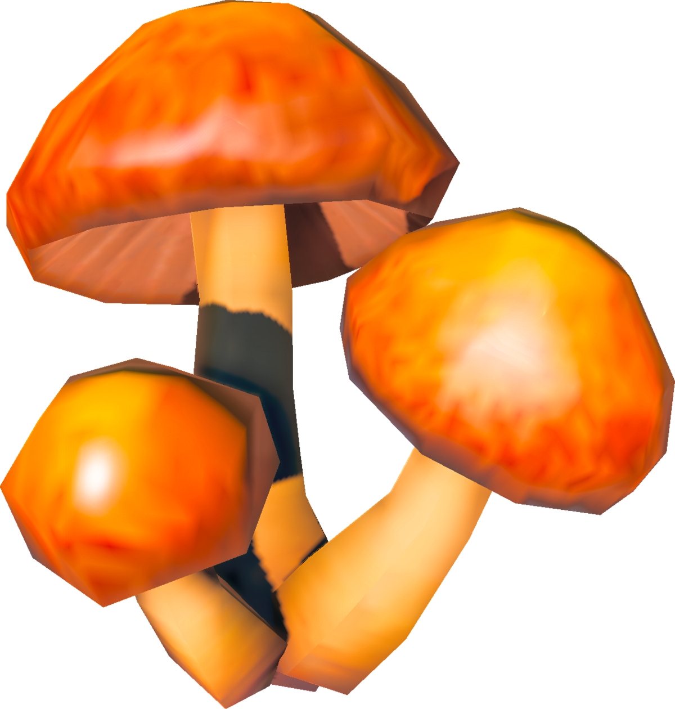
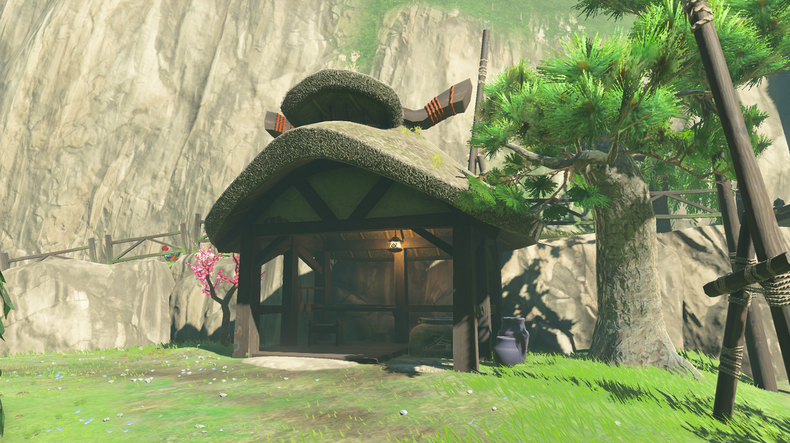

在《塞尔达传说：王国之泪》里，海拉鲁大陆的烹饪系统极其自由，你可以把各种奇奇怪怪的东西丢进锅里。但讲真，通关或者开荒过程中，你真正需要常备的料理也就那么几种。通关大佬和速通玩家们基本都在用以下几款高性价比的"神级料理"。
下面直接给你干货，省去那些花里胡哨的菜谱，只看最实用、性价比最高的几种搭配，以及它们的素材该去哪里顺手薅一波。

林克在锅边料理（游戏实机截图）
核心必备：
四大神级料理详解


| 菜名 | 材料 | 效果 |
|---|---|---|
| 生命煎野菜 | 大生命萝卜 ×1 | 回满当前可用红心 + 5 颗临时心 |
| 生命蒸蘑菇 | 生命松露 ×1 + 海拉鲁草（或任意野菜） | 回满当前可用红心 + 临时心 |
| 生命烤蘑菇串 | 生命松露 ×1（单煮） | 回血（见正文） |

| 菜名 | 材料 | 效果 |
|---|---|---|
| 大剑炖水果 | 大剑香蕉 ×5 | 攻击 3 级，持续 4:10 |
| 大剑炖水果（替换） | 大剑香蕉 ×4 + 大剑草 ×1 | 攻击 3 级 |
| 大剑炖水果（减量） | 大剑香蕉 ×4 | 攻击 3 级，持续时间较短 |

| 菜名 | 材料 | 效果 |
|---|---|---|
| 野菜牛奶粥 | 向阳草 ×1 + 鲜奶 ×1 + 海拉鲁米 ×1 | 恢复 3 颗破碎心 + 回血 |
| （变体） | 向阳草 ×5 | 只恢复瘴气，不回血 |
| （变体） | 向阳草 ×5 + 肉 / 海拉鲁米 | 恢复瘴气 + 回血 |

| 菜名 | 材料 | 效果 |
|---|---|---|
| 胡萝卜蛋糕 | 毅力胡萝卜 ×1 + 塔邦挞小麦 ×1 + 蔗糖 ×1 + 山羊奶油 ×1 | 瞬间补满精力槽 + 一小段额外精力（黄金圈） |
更多常备料理：按场景再配七道
四大神级解决的是回血、加攻、瘴气、精力，但出门要面对的场景不止这四种：雪山要防寒、沙漠要耐热、雷暴天要防雷、打 Boss 前要防御、赶路要移速、摸哨要潜行。下面七道全是“一种主力食材×5”的蘑菇串做法，配方不用死记硬背，记住一个原则就行：同种效果的食材叠着煮，效果等级和持续时间都往上涨。做出来一次就记进食谱书（按 + 打开背包，到食物栏按 X 就能看配方），下次直接按食谱做。

暖暖菇（游戏内模型图）
翻车点：四种做法只会出暗黑料理
料理翻车不像打架翻车，翻一次不掉血，但一锅好食材就白瞎了。下面四种做法，出锅必定是暗黑料理，记住了就别再试。
- 怪物素材下锅：犄角、眼球、肝脏这些怪物素材是做药剂的料，下锅做菜只会出暗黑料理。想吃肉就用正经肉，别拿战利品当食材。
- 虫子、青蛙、蜥蜴下锅：这些小动物同样是药剂的另一半，混进料理一样出暗黑料理。药剂是虫子加怪物素材，料理是食材，两条线别串。
- 不同效果混搭：大剑香蕉加暖暖菇一起煮，两个效果互相抵消，出锅就是一盘没加成的普通回血菜。一锅只给一个效果，这是铁律。
- 调味料单煮、矿石木材下锅：只放米、盐、奶油这些调味料，没有正经食材，同样出暗黑料理；矿石、木材下锅出的是硬邦邦的岩石料理，一样不能吃。
暴击与时长：龙角一放，30 分钟拉满
同一锅菜，懂行的人做出来持续 30 分钟，新手做出来只有 3 分钟，差别就在两样东西上。
| 做法 | 材料 | 效果 |
|---|---|---|
| 任意带效果料理 | 龙角 ×1 | 持续 30:00，必暴击 |
| 做法 | 材料 | 效果 |
|---|---|---|
| 普通料理 | 岩盐 ×1 | 时长 +1:00 |
- 同效果叠加：效果等级和持续时间都随同种食材数量增加，所以“×5”是性价比最高的懒人做法。想再精细，查本站料理机制完全指南里的时长表。
核心食材去哪捞？
知道了配方，去哪儿高效进货才是关键。海拉鲁大陆有几个著名的"大自然批发市场"，传送过去拔腿就捞，几分钟就能装满背包。
| 食材名称 | 核心效果 | 最优采集地点与路线 |
|---|---|---|
| 大剑香蕉 | 3级攻击 | 费罗尼地区（地图右下角热带雨林）。尤其是湖畔驿站周边、芙罗拉湖一带的树林里遍地都是，顺便端了依盖队基地也能搜刮一堆。 |
| 向阳草 | 瘴气恢复 | 所有天空群岛（空岛）。比如初始空岛、或者有各种弹跳机关的空岛，只要在地上看到金黄色像向日葵一样的植物，拔就完了。向阳草主要长在天空岛，地底没有。 |
| 大生命萝卜 | 完全复活 | 雷霆头岛屿（Thunderhead Isles）、北涅克卢达天空群岛。这东西比较稀有，看到了一定要用图鉴拍照功能开启"寻找探测器"。 |
| 金苹果 | 料理暴击 | 萨托利山（监视堡垒西南方）的苹果园。山上有一片巨大的苹果林，里面混生着好几颗金苹果，拿来当引子可以让料理效果大成功。 |
| 暖暖菇 | 2级防寒 | 奥尔汀峡谷、格鲁德高地；格鲁德小镇蘑菇摊 16 卢比一个。 |
| 清凉菇 | 2级耐热 | 格鲁德高地、赫布拉山的松树下；格鲁德小镇蘑菇摊 16 卢比一个。 |
| 冲击菇 | 3级防雷 | 格鲁德沙漠、拉聂尔湿地；格鲁德小镇蘑菇摊 16 卢比一个。 |
| 铁蘑菇 | 3级防御 | 东内克鲁达、西内克鲁达一带；铠甲南瓜、坚硬三叶草可替。 |
| 静谧菇 | 潜行提升 | 阿卡莱高地、西内克鲁达；弗洛里亚山洞窟外的岩架上也有一片。 |
不想采就买：哈特诺杂货店 12 卢比专区

野外的公共烹饪区（游戏实机截图）
野外有的是公共烹饪区，锅永远在那儿，缺的只是食材。懒得满地图采，就去杂货店买：哈特诺村的东风杂货店。
| 商品 | 价格（卢比） |
|---|---|
| 海拉鲁米 | 12 |
| 新鲜牛奶 | 12 |
| 山羊奶油 | 12 |
| 铠甲南瓜 | 20 |
| 速速胡萝卜 | 16 |
牛奶一次只卖 3 瓶，路过就扫空。牛奶还能拿 3 个橡子去哈特诺牧场找丹茨换，橡子满地都是，等于白拿。开荒期不用特意跑哈特诺，监视堡垒的杂货店也有米卖（完成一座神殿后上架），同样 12 卢比。
哈里的取舍：常备料理怎么配
食物栏上限约 60 种（5 行×12 列），但别全塞一种。开荒期这样配：生命煎野菜煮 5 份，大剑炖水果煮 10 份，野菜牛奶粥煮 5 份——回血、加攻、瘴气全 cover，九成场景够用。中后期大剑炖水果常驻，剩下按当天目的地换：去雪山带辣味蘑菇串，去沙漠带清凉蘑菇串，打 Boss 前现煮一锅坚硬蘑菇串。料理现煮现吃比囤积强：出门前在驿站、村子的锅边按当天行程煮，比背一包不知道用不用的菜实在。记住，料理是消耗品，不是收藏品，煮出来就是用来吃的。